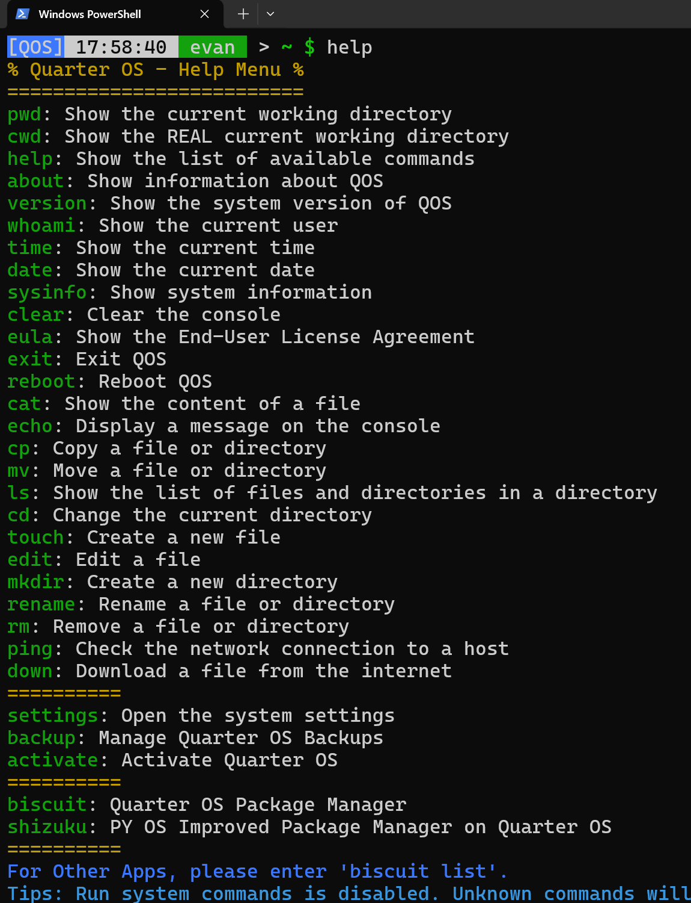

Quarter OS
Pro级的Python伪系统


Pro级的Python伪系统
Quarter OS 内置 Kom Shell 终端用户界面，具有高效的交互性和直观的操作，同时集成了丰富的命令，满足用户基本需求。
Quarter OS 系统依赖文件全部存放在 system 文件夹中，用户数据存放在 data 和 home 文件夹中，方便备份/恢复数据和重装系统
Quarter OS 提供丰富的个性化设置，包括但不限于终端主题，启动Logo，启动欢迎标语等，满足不同用户的个性化需求。
Quarter OS 提供了 Biscuit 软件包管理器，同时对于开发人员提供了便利的软件包封装工具，希望大家共同行动起来，共建Quarter OS的软件生态。
Quarter OS 基于 GNU GPLv3 许可证开源免费，您可以免费使用，同时Quarter OS对于新手用户十分友好，可以快速上手。
Quarter OS 提供了丰富的在线功能，例如获取天气，从软件源获取Biscuit软件包，在线阅读文章等实用功能。
在Oak Studio官方网站上，您可以找到丰富的文档，包括配置Python3环境，配置虚拟环境，安装Quarter OS，Quarter OS的使用教程，以及Biscuit软件包的开发文档等等。
Quarter OS 登录管理器
Quarter OS 终端界面
Quarter OS 软件包管理器

Quarter OS 软件包管理器
Quarter OS 内置应用